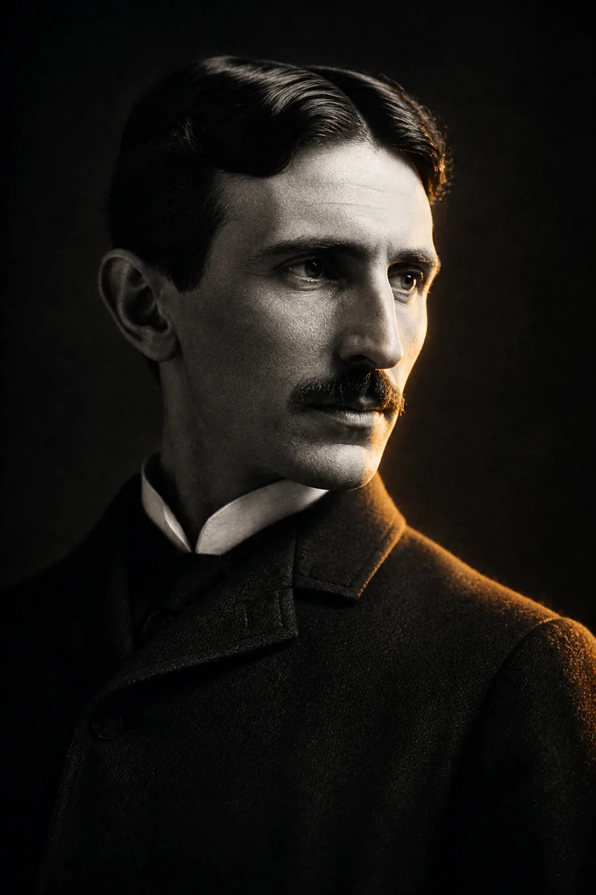

Issue 003 · 2026.11.25 · Archive
넘어진 뒤의
기록들
위대한 사람들의 성공담이 아니라, 가장 아팠던 하루를 기록합니다. 숫자와 날짜, 그리고 그날 남긴 말로.
오늘의 기록

테슬라 스토리
1895, 실험실이
1895, 실험실이
재가 된 새벽
새벽 2시 30분의 불이 반쪽 인생의 기록을 지웠다. 그는 같은 날 오후 설계도를 다시 그렸다.
발행된 기록
3 Stories

후보 30인 라인업
창업·도전 / 과학·발명 / 리더·역경 — 30편의 기록
전기 이야기 1편씩,
메일로 받기
매일 아침, 실패를 넘은 사람의 하루를 1편씩. 광고 없이, 읽는 데 5분.
언제든 클릭 1번으로 구독을 취소할 수 있습니다.
이 기록을 쓰는 방식
감동은 결론이 아니라, 검증에서 나온다고 믿습니다.
사료 우선
인물의 말은 전기·편지·당시 신문으로 확인합니다. 확인되지 않은 명언은 ‘널리 인용되는 말’로 표시합니다.
이미지 원칙
초상은 공개 도메인 사료 사진이나 에디토리얼 일러스트만 사용하고, 이미지마다 AI 생성 여부와 출처를 밝힙니다.
숫자는 아라비아 숫자로
나이·연도·개수·횟수는 모두 67세, 13동, 10,000명처럼 적습니다. 읽는 사람이 한눈에 비교할 수 있도록.